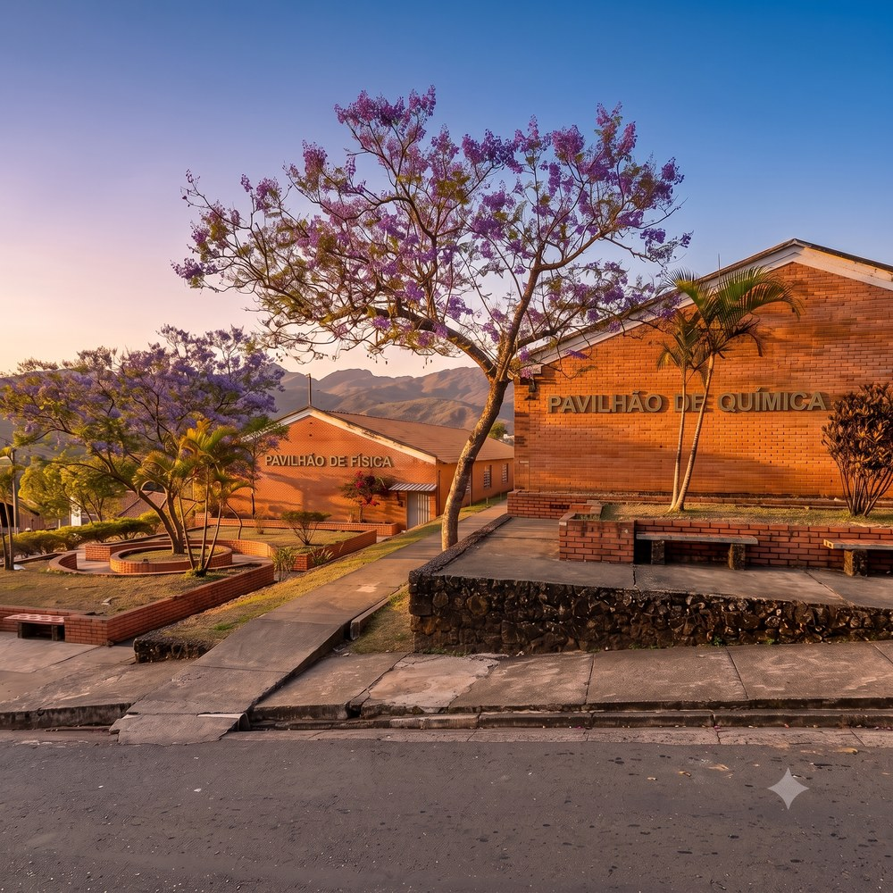
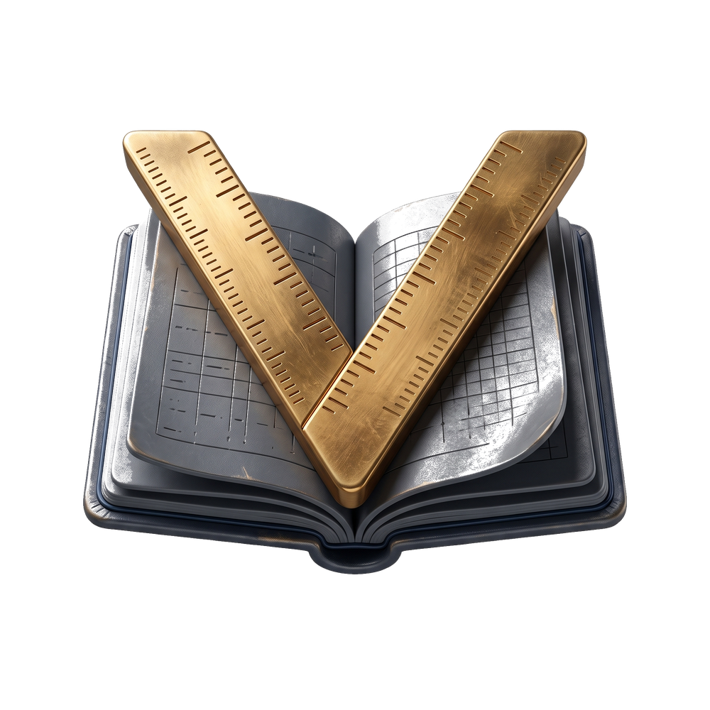
"Quando se pode medir aquilo de que se fala, e exprimi-lo em números, sabe-se algo sobre ele; mas quando não se pode medi-lo, quando não se pode exprimi-lo em números, o conhecimento é escasso e insatisfatório."
A luz da manhã de março em Ouro Preto atingia a fachada dos Pavilhões de Física e Química antes de Sofia, Pedro e Lucas alcançarem a porta da entrada do Pavilhão de Física. Eram quase sete horas. Para eles, dar alguns passos à frente seria simples — mas carrega o peso de uma travessia: do lado de fora, o mundo das opiniões; do lado de dentro, o laboratório onde toda opinião vira hipótese e toda hipótese exige número.
Sofia ia na frente. Filha de uma professora de matemática do ensino fundamental, ela tinha aprendido cedo a ler manuais e gostar de instruções — algo que os colegas chamavam de "ser certinha" mas que ela preferia chamar de "saber por onde começar". Trazia um caderno novo, capa dura azul, ainda em branco.
Pedro vinha logo atrás. Filho de mineiro da Vale, ele já conhecia uma britagem por dentro — o pai o levava aos sábados, e ali ele havia aprendido a respeitar Equipamento de Proteção Individual (EPI), ordem de serviço e sirene de evacuação. Sabia que tudo o que se faz num lugar de trabalho tem uma razão, ainda que ninguém explique.
Lucas fechava o trio. Morador do centro histórico, neto de um sacristão da Igreja São Francisco de Assis, ele tinha o jeito de quem observa antes de falar — herdara dos avós a paciência de medir três vezes antes de cortar. No bolso da mochila, levava uma régua escolar e um lápis preto bem apontado.
O Prof. Júlio os esperava na porta, com uma camisa polo verde. Sorriu quando os três apareceram na entrada do corredor — era a primeira turma de Física Experimental 1, no IFMG-OP em 2026.
— Bom dia. Antes de entrarmos, uma pergunta: quanto você mede?
Sofia respondeu sem pensar: — 1 e 68.
Pedro, com a certeza de quem já se mediu num consultório: — 1 e 75.
Lucas hesitou: — Acho que 1 e 72. Medi com a régua de casa semana passada, mas pode ter mexido.
— "Acho", "pode ter mexido". — O Prof. Júlio fez um gesto convidando os três a entrar. — Daqui a uma hora e meia, cada um de vocês vai ter medido a altura de um colega quatro vezes, em quatro réguas diferentes. E quando comparar com a própria estimativa de agora, vai entender o que faltava na resposta de vocês — e o que sobra em qualquer número dito sem incerteza. Venham.
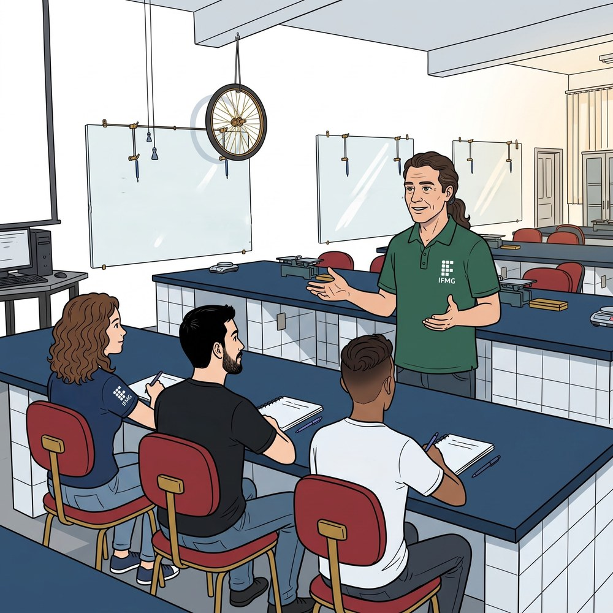
A porta do Laboratório de Mecânica já estava aberta. Bancadas brancas alinhadas, balanças mecânicas distribuídas, uma roda de bicicleta pendurada no teto, e — a coisa que mais chamou a atenção de Sofia — três escalas de altura na parede, todas marcadas à mão, com uma fita métrica colada ao lado delas.
Pedro estranhou: — Cadê os cartazes de segurança, professor? Na britagem da Vale tem uns vinte na entrada.
— Ainda não tem. — O Prof. Júlio sorriu. — As regras, vocês vão propor hoje: essa é parte da aula. Depois, a página Sugestões de Aprimoramento do site fica aberta para a turma aprimorá-las — e os cartazes de segurança serão produzidos quando as sugestões de vocês chegarem.
As construções retangulares dos Pavilhões de Física e Química, iniciadas em 1982 e inauguradas em 1985, completam 41 anos de existência. Milhares de pessoas passaram pelos laboratórios desses dois pavilhões que representam a ponte entre o pensamento de Gorceix que carrega 150 anos de tradição em "medir antes de afirmar" e a ciência que você poderá aprender.
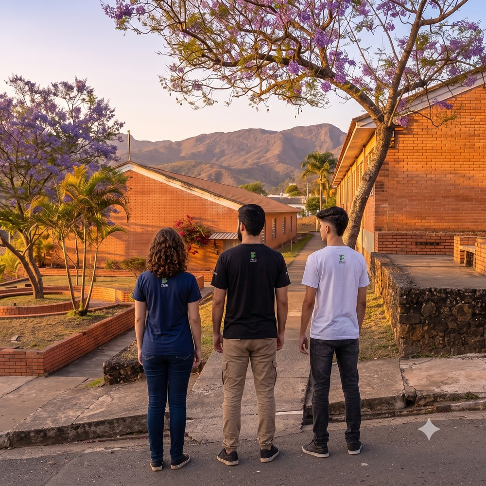
Passar pela porta do Laboratório de Mecânica foi o gancho — agora começa o trabalho. Os cinco tópicos que seguem formam o alicerce sobre o qual todas as 16 trilhas seguintes vão se apoiar: cada conceito medido, cada incerteza declarada, cada linha do Caderno de Laboratório nasce aqui, nesta primeira manhã.
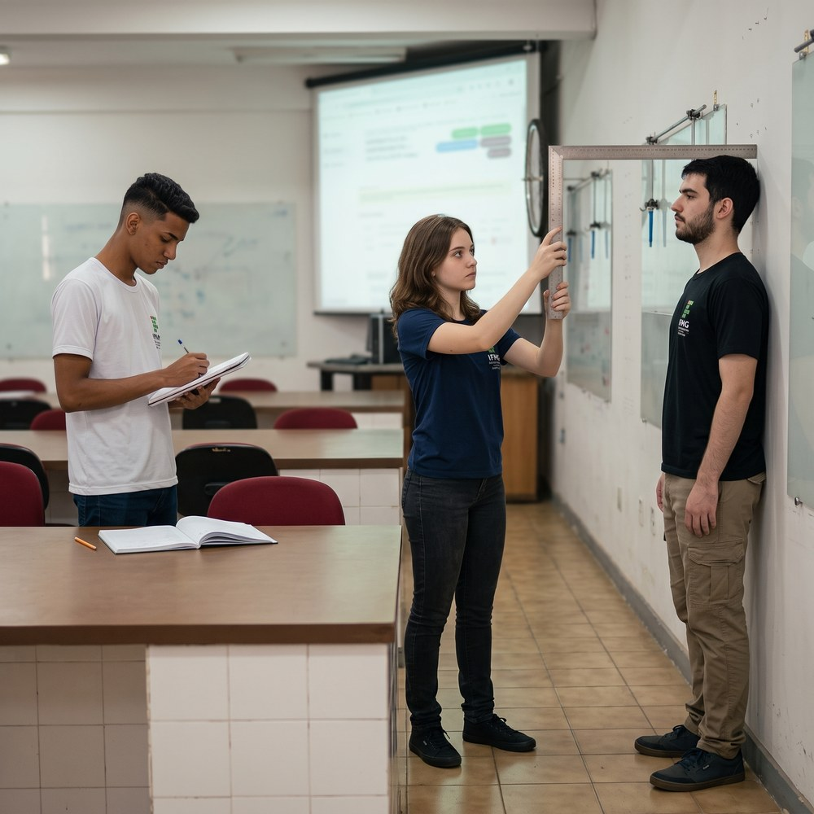
A Física Experimental é uma matéria diferente da Física Conceitual: aqui você não aprende o conceito — você mede o conceito. Mas para medir bem, precisa antes entender cinco coisas.
Medir, na ciência, não é um gesto solto: é um procedimento com começo, meio e resultado. Confundir o ato (a medição) com o resultado (a medida) é o primeiro equívoco que este tópico desfaz.
Numa lavra, o engenheiro de minas não "mede de olho" a espessura de uma camada de minério — ele executa uma medição com trena, GPS e amostragem, e o que sai disso é uma medida com incerteza declarada. A NR-22 exige metodologia documentada em qualquer estimativa de reservas.
Quando Henri Gorceix chegou a Ouro Preto em 1875 para fundar a Escola de Minas, trouxe uma frase repetida em todas as suas aulas: "il faut mesurer avant d'affirmer" — é preciso medir antes de afirmar. A diferença entre "achismo" e "metodologia" tem um nome em Ouro Preto: ela se chama escola gorceixiana.
Quando você diz "tenho 1 e 68", está dando uma medida — mas é uma medida feita por outra pessoa, em outro lugar, com outro instrumento, talvez há meses. Você já se mediu hoje? Com o quê? A medida que você carrega no bolso da memória não é a mesma coisa que uma medida feita aqui, agora, no lab.
Medição = o conjunto de procedimentos executados para obter um resultado. É o ato, o processo (posicionar, alinhar, ler).
Medida = o resultado obtido em uma medição. É o número acompanhado de unidade (e, idealmente, de incerteza).
Toda medida, para ser científica, precisa de três elementos: (1) um valor numérico, (2) uma unidade do Sistema Internacional (SI), (3) uma estimativa de incerteza. Faltando qualquer um deles, o que você tem não é medida — é opinião.
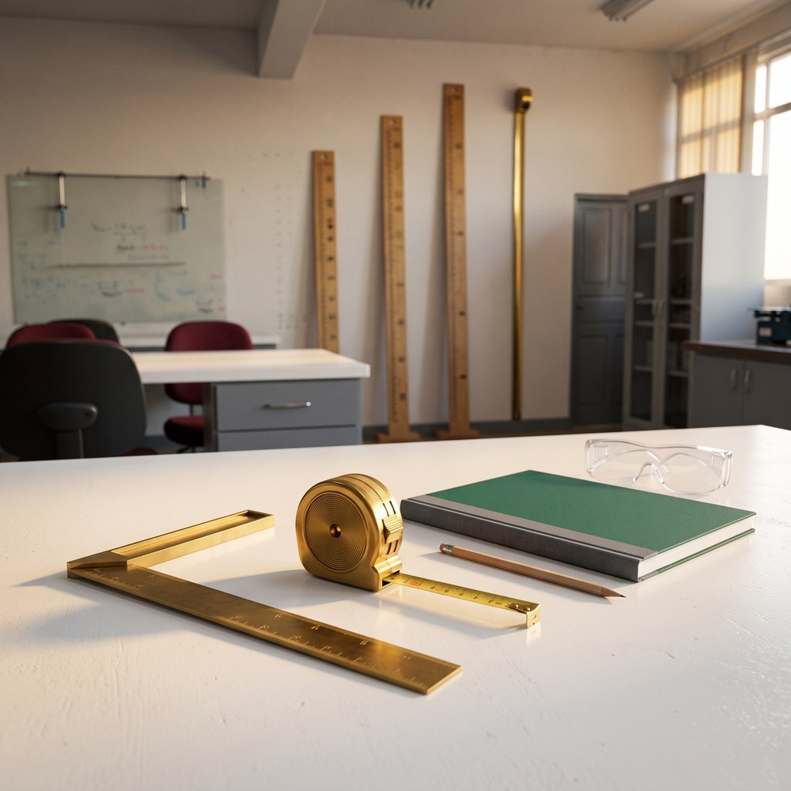
Quatro réguas lado a lado na parede do laboratório — escalas diferentes, traços mais grossos ou mais finos, limites de leitura distintos. Nenhum instrumento diz mais do que foi projetado para dizer.
Cada instrumento da operação mineira tem um limite de leitura — o GPS de campo lê até 0,1 metro, a balança da expedição lê até 10 kg, o pH-metro lê até 0,01. Reportar uma medida com mais casas decimais do que o instrumento permite é um erro técnico que pode invalidar todo um relatório.
No Museu de Ciência e Técnica da UFOP existem réguas de proporção do século XVIII com escalas logarítmicas marcadas a buril. A relação entre escala e algarismo significativo já era assunto na Escola de Minas no século XIX.
Quando você lê um termômetro de febre digital que mostra "37,4", você não pode escrever "37,42" no caderno — o instrumento não sabe dizer aquele 2. O que ele sabe dizer é tudo o que ele mostra; o que ele não sabe, você não tem direito de inventar.
Escala = a "régua interna" do instrumento — sua menor divisão define o quão fino ele consegue distinguir.
Algarismos Significativos = algarismos corretos + 1 algarismo duvidoso. Os corretos você lê direto na escala; o duvidoso é o último, estimado entre as divisões.
| Escala | Menor divisão | AS esperados |
|---|---|---|
| Escala manual #1 | 1,0 m | 1 (ex.: "2 m") |
| Escala manual #2 | 1,0 dm | 2 (ex.: "1,7 m") |
| Escala manual #3 | 1,0 cm | 3 (ex.: "1,68 m") |
| Fita métrica | 1,0 mm | 4 (ex.: "1,683 m") |
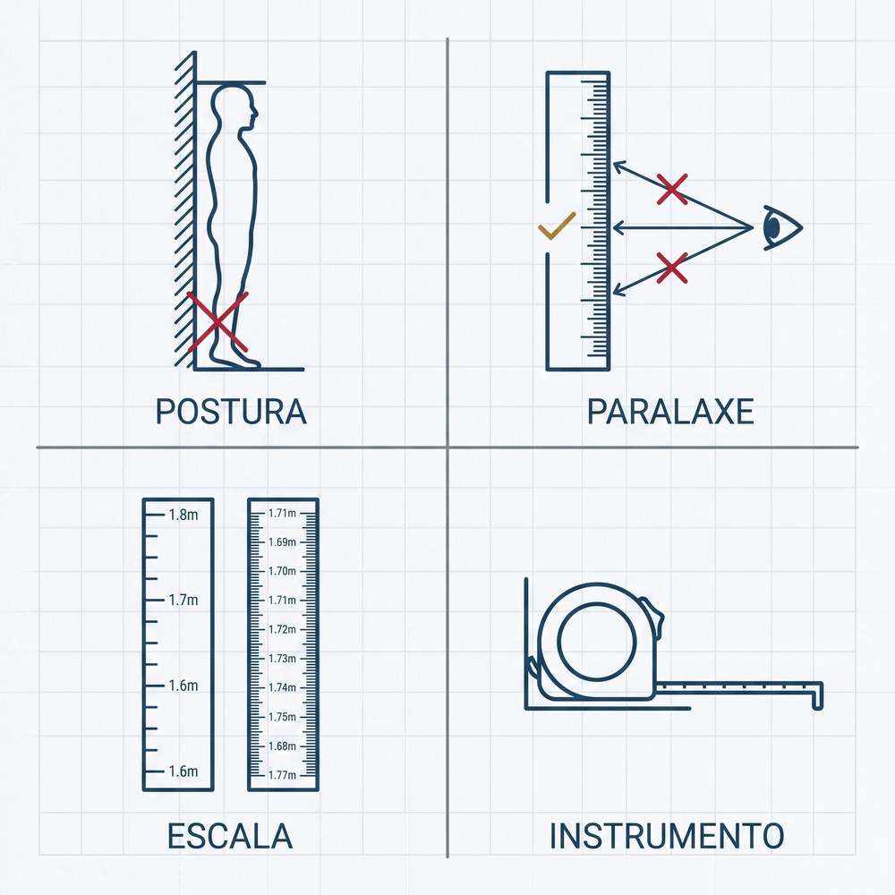
Olhe uma régua de uma posição e obterá uma medida; olhe de outra posição e poderá obter outro resultado. A paralaxe é o lembrete visual: toda medida depende de quem mede e de onde mede. A incerteza não é fraqueza do instrumento: é honestidade do cientista.
Nenhum minerador sério fala em "tonelagem de minério" sem dizer junto qual a incerteza estimada. A Resolução ANM 68/1995 exige que o Plano de Aproveitamento Econômico contenha as faixas de variação das reservas — porque tomar decisão econômica com um número sem incerteza é tomar decisão com chute disfarçado de dado.
Os engenheiros da Escola de Minas, no começo do século XX, já davam aos alunos o exercício clássico: "meça dez vezes a mesma coisa e me diga o que você aprendeu". A resposta sempre era a mesma — as dez medidas não são iguais, e isso é a primeira lição do laboratório.
Incerteza = a margem de erro embutida em toda medida — marca até onde o resultado é confiável.
Incerteza instrumental = (menor divisão) / 2. Régua de 1 mm → incerteza = 0,5 mm.
Exemplo: Se você medir a altura de Sofia em 4 réguas e obtiver 1,67 / 1,68 / 1,68 / 1,69 m, a incerteza experimental será δh = (1,69 − 1,67)/2 = 0,01 m. A altura final fica registrada como (1,68 ± 0,01) m.
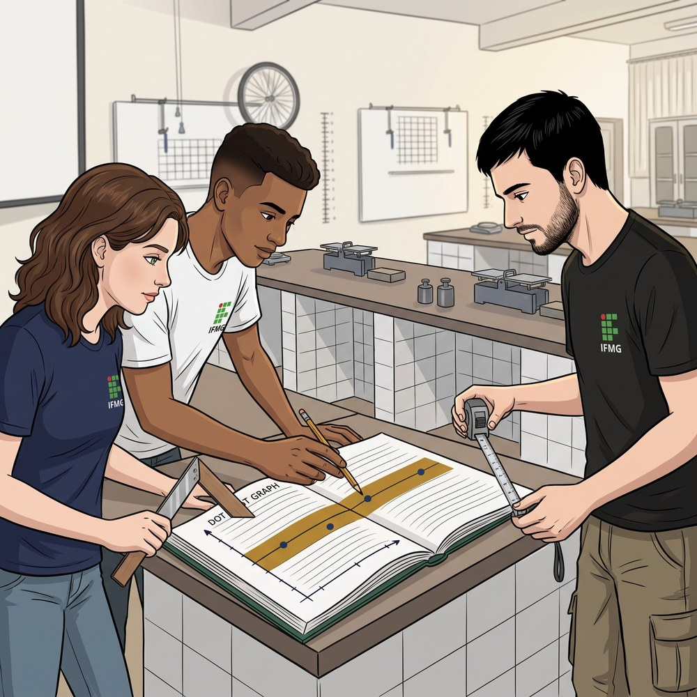
A Física Experimental 1 tem um caminho de estudo com nome e ordem: o Método de Estudo das Trilhas de Aprendizagem. A ordem não é burocracia — ela segue como o cérebro aprende: preparação (pergunta antes da resposta), construção ativa (recuperar em vez de reler) e consolidação (revisão no mesmo dia e revisões espaçadas, com o sono fazendo a parte dele). Cada trilha percorre três paradas:
Como apoio da preparação, sem número: os Cartões Didáticos (CD), o Mapa Conceitual (MC), o Inventário de Equipamento (IE) e o Checklist de Segurança (CS) — quem chega sabendo o que vai na bancada gasta os 100 minutos do Lab medindo, não descobrindo.
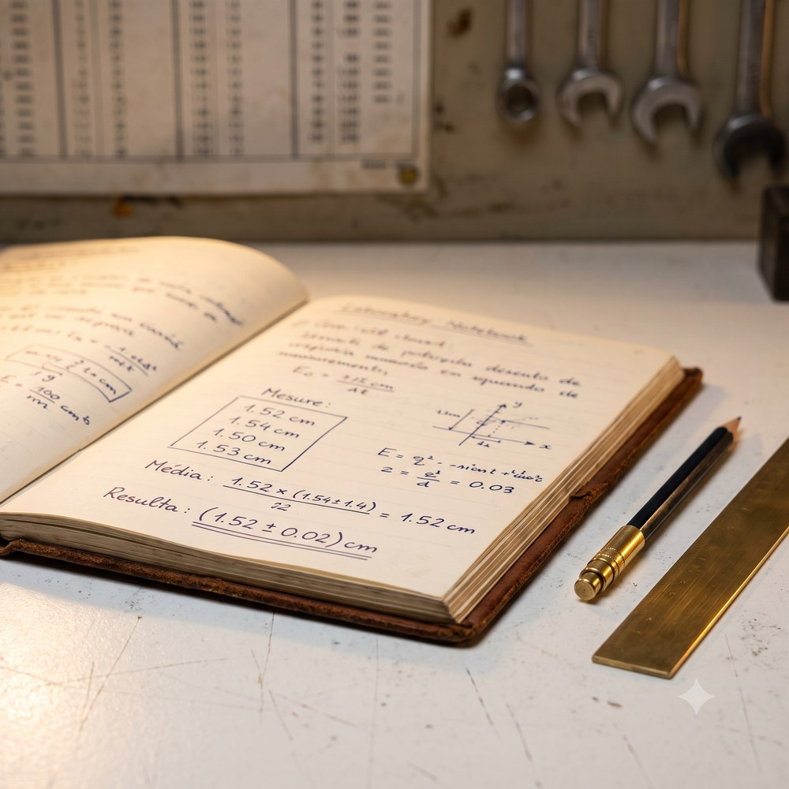
E o Caderno de Laboratório? Ele é onde a ciência ganha memória — e nesta disciplina ele vai surgir ao final de cada tema, com a edição dos seus Roteiros de Bancada: as folhas que você preenche na bancada, prática após prática, reunidas e encadernadas viram o caderno do tema.
O Caderno de Laboratório do engenheiro de minas é tão importante quanto o instrumento de medição — é onde fica o registro auditável do que foi medido, quando, por quem, com qual aparelho. O DNPM (hoje ANM) exige, desde os anos 1980, cadernos numerados e datados em toda operação formal.
Leonardo da Vinci deixou mais de 6.000 páginas de cadernos de laboratório — onde anotava medidas de tudo. O caderno era seu laboratório portátil. Quando os seus Roteiros de Bancada virarem caderno, você estará entrando numa tradição que liga Leonardo aos engenheiros da Escola de Minas.
O Método pede pouco de cada vez: minutos de áudio no ônibus, uma leitura com música instrumental, um relatório de uma página antes de dormir. É menos do que uma tarde de véspera de prova — e rende mais, porque respeita o modo como a sua memória de fato funciona.
O protocolo de resolução: o C5 em oito etapas. Dentro do Método, toda pergunta quantitativa se resolve pelo mesmo protocolo — o Protocolo C5.
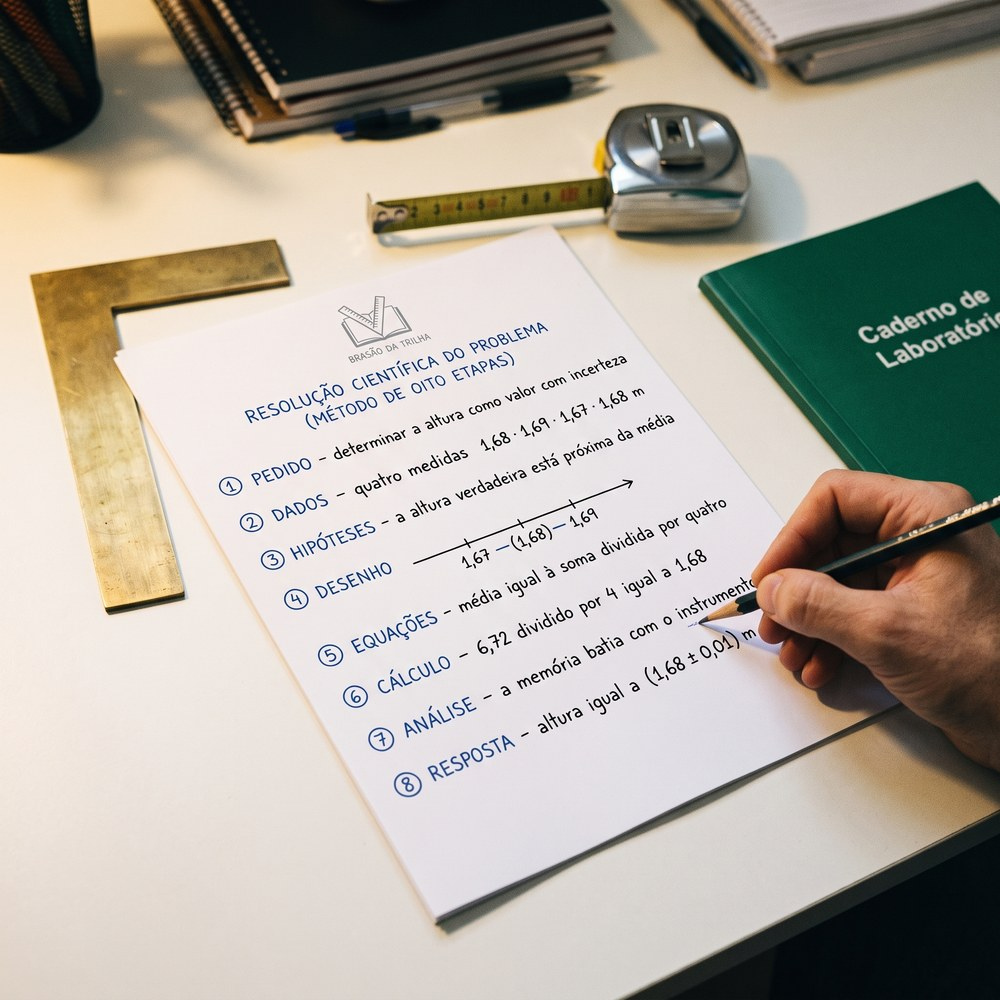
Exemplo — a altura da Sofia (C5 completo):
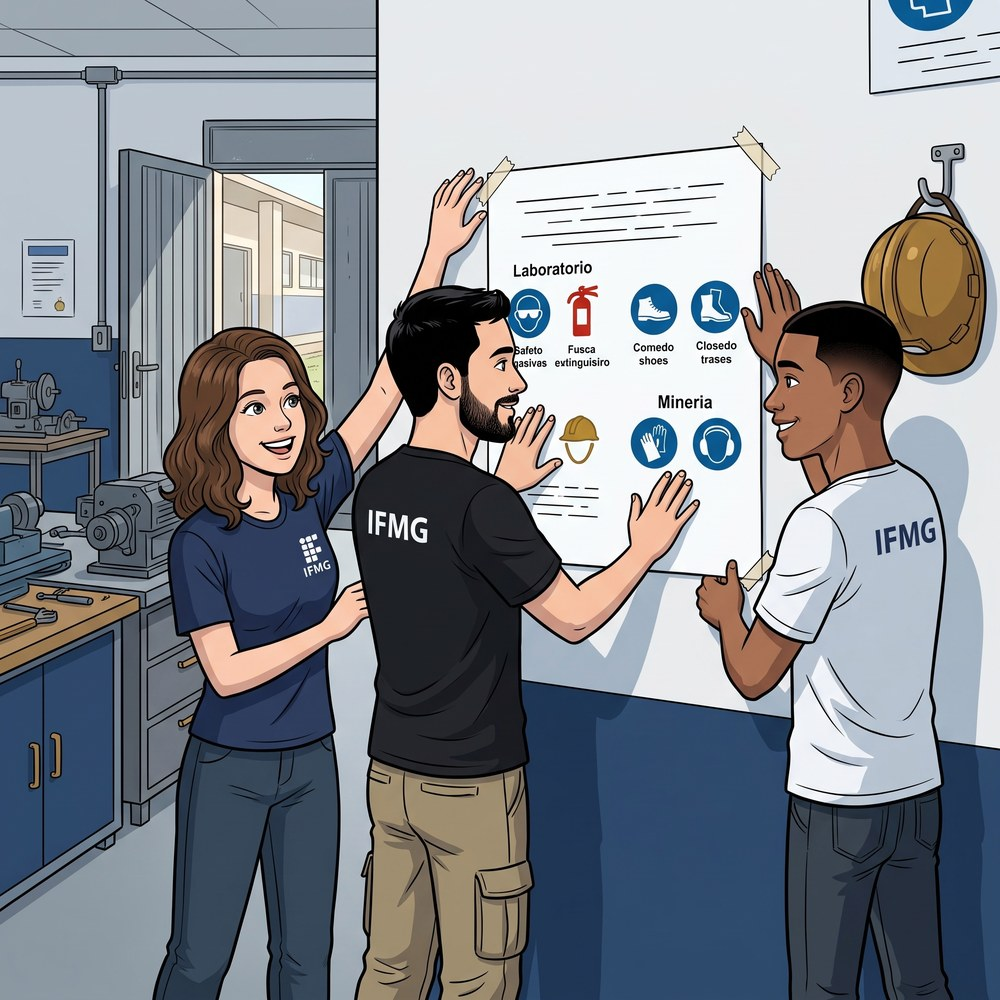
Fixar regras na parede — é um gesto quase burocrático, mas carrega o peso de um pacto. Quando Sofia, Pedro e Lucas propõem as normas do Laboratório de Mecânica, não estão obedecendo a uma ordem: estão fundando uma tradição.
A NR-22 — Segurança e Saúde Ocupacional na Mineração é a norma que rege o cotidiano de todos os trabalhadores da mineração brasileira. Esta T0A faz uma inovação: traz os princípios da NR-22 para o laboratório escolar, criando — em conjunto com os alunos — o primeiro conjunto de normas operacionais do Laboratório de Mecânica do IFMG-OP.
| NR-22 | Aplicação no Lab de Mecânica |
|---|---|
| 22.1 | Cada aula recebe um Roteiro de Prática — sua ordem de serviço |
| 22.6 | Sapato fechado a partir da T01; óculos em trilhas com risco |
| 22.13 | Cartaz das normas afixado após a T0A |
| 22.21 | Qualquer acidente deve ser comunicado ao professor |
| 22.36 | A T0A é o treinamento básico — você está no momento dele |
Nessa aula você e seus colegas vão conhecer o Método de Estudo e propor as regras do Laboratório de Mecânica — o professor vai consolidá-las no quadro. Depois da aula, a conversa continua no site da FE1: a página Sugestões de Aprimoramento fica aberta para você enviar melhorias às regras, por texto ou por áudio. Ao ser aprovada, a lista vira o primeiro cartaz oficial do laboratório — e leva os nomes dos autores.
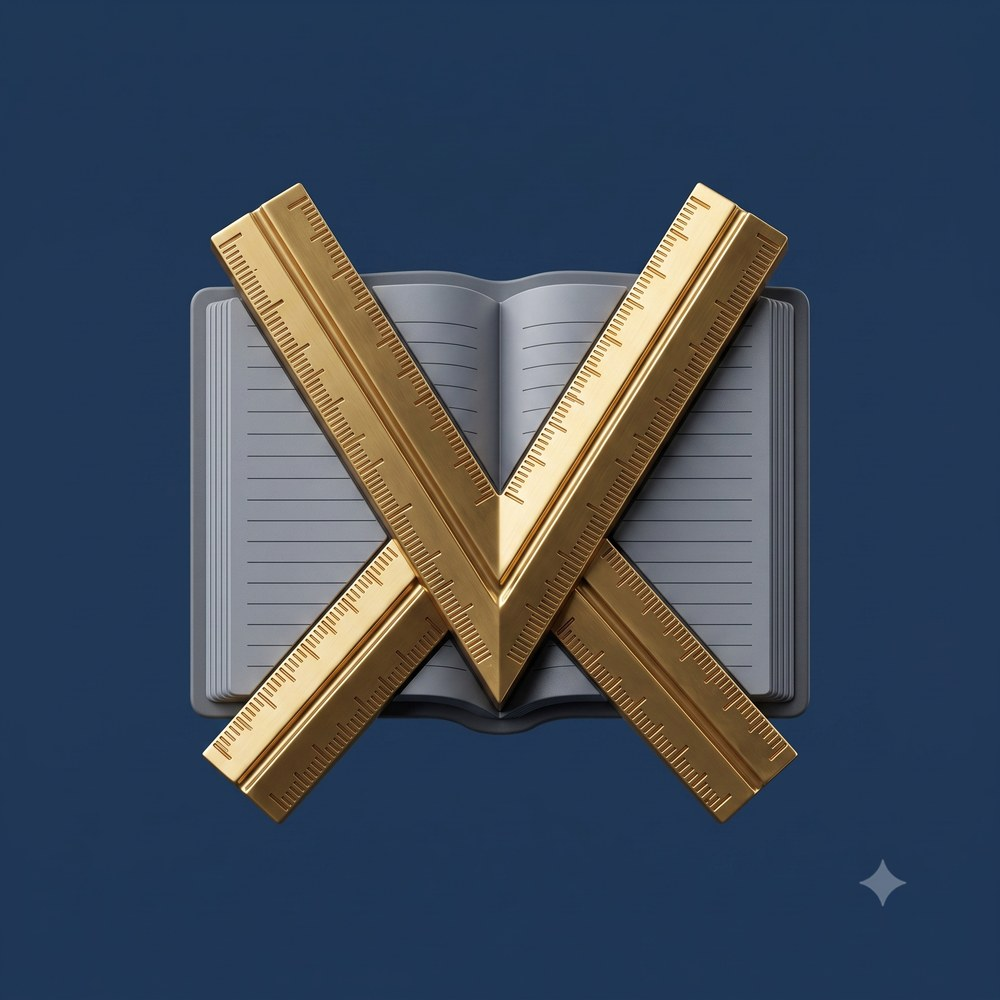
O mesmo corredor, a mesma porta — mas quem sai não é quem entrou. Cadernos preenchidos sob o braço, o cartaz de regras já afixado na parede ao fundo. A manhã que começou com uma pergunta — "quanto você mede?" — termina com uma resposta que inclui incerteza.
Sofia escreveu no fim da página do caderno: "Minha altura = (1,68 ± 0,01) m. Acertei o que disse no começo — mas agora a resposta tem incerteza. É ciência, não chute."
Pedro descobriu uma coisa que não esperava: a forma de posicionar o olho em frente à escala pode mudar o resultado em até 1 cm. Anotou: "Erro de paralaxe. Tem que estudar isso na próxima trilha."
Lucas, que tinha hesitado no começo com "acho 1 e 72", saiu com (1,71 ± 0,02) m. A diferença para o que ele tinha dito era menor do que a incerteza — então a memória batia com o instrumento. Escreveu: "A memória tem incerteza também. Acho que aprendi alguma coisa fundamental hoje."
Antes de sair, o Prof. Júlio fez três pedidos:
"Todo o nosso conhecimento tem sua origem nas percepções."
BONJORNO, J. R. Identidade Saraiva: Física. São Paulo: Saraiva, 2024.
MÁXIMO, A. et al. Física: contexto & aplicações. São Paulo: Scipione, 2013.
TALAVEIRA, A. C. et al. Física: ensino médio, v. único. São Paulo: Nova Geração, 2005.
HEWITT, Paul G. Física conceitual. 12. ed. Porto Alegre: Bookman, 2015.
PIAZZI, Pierluigi. Aprendendo inteligência. São Paulo: Aleph, 2008.
PIAZZI, Pierluigi. Inteligência em concursos. São Paulo: Aleph, 2013.
BRASIL. NR-22 — Segurança e Saúde Ocupacional na Mineração. Brasília, 2002.
ANM. Resolução n.º 68/1995 — Plano de Aproveitamento Econômico. Brasília, 1995.
THOMSON, William. Electrical Units of Measurement. London, 1883.